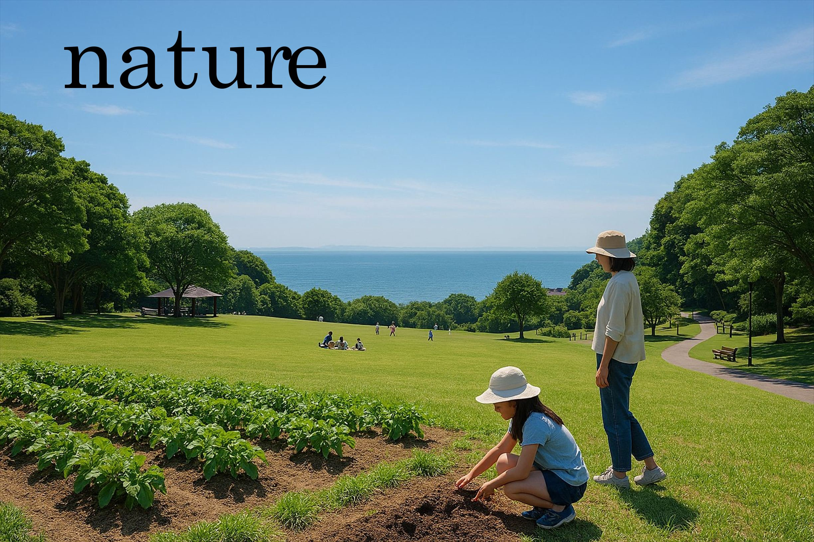
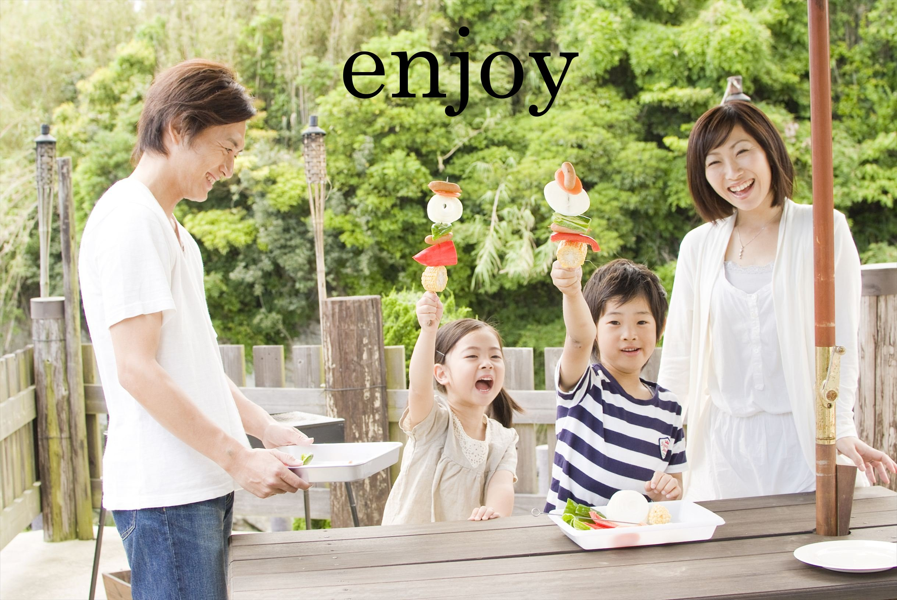
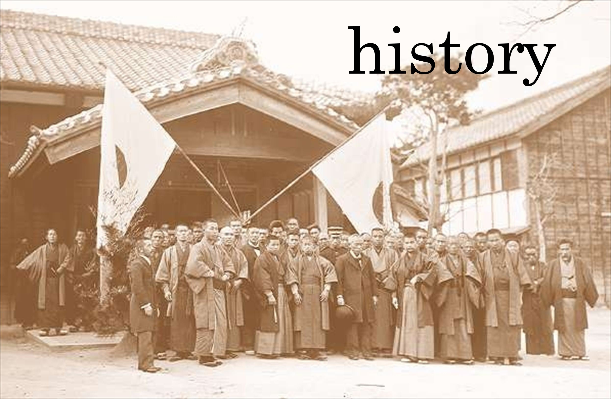
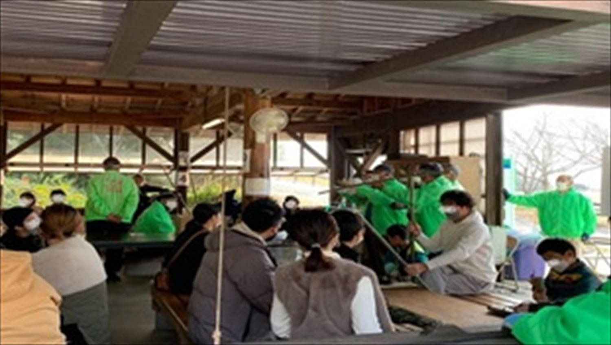
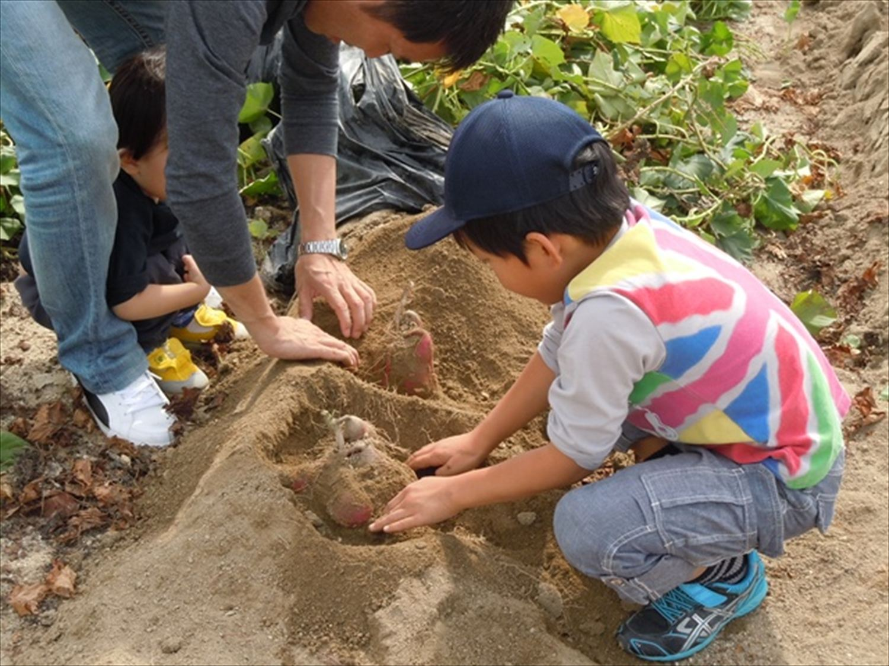
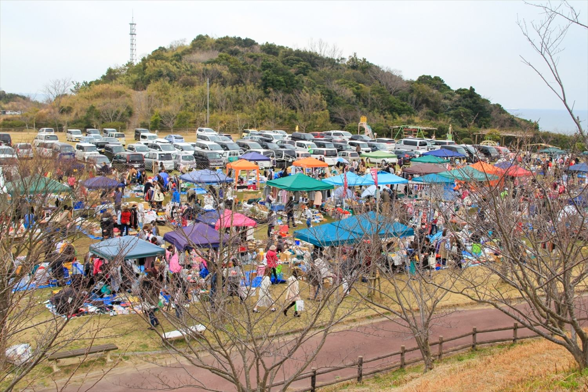
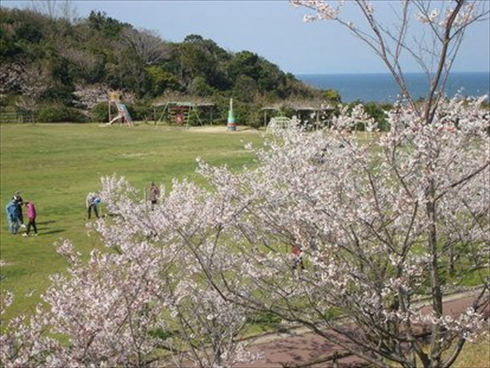
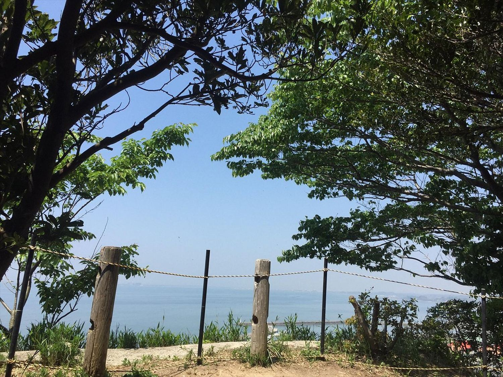

海と緑につつまれた体験型の自然空間Fresh Roasted Coffee
伊勢湾を一望できる高台に広がる小脇公園は、潮風と緑の香りが心地よく交わる場所です。
広大な芝生広場では、子どもたちが駆け回り、大人は海を眺めながら深呼吸。園内の農園では、芋掘りやいちじく収穫など、季節ごとの恵みを自らの手で味わうことができます。 春には桜、夏には青々とした木々、秋には実り、冬には澄んだ空気と遠くまで見渡せる景色。 訪れるたびに違う表情を見せる自然が、心と体をやさしく解きほぐしてくれます。

伊勢湾を一望できる高台に広がる小脇公園は、潮風と緑の香りが心地よく交わる場所です。
広大な芝生広場では、子どもたちが駆け回り、大人は海を眺めながら深呼吸。園内の農園では、芋掘りやいちじく収穫など、季節ごとの恵みを自らの手で味わうことができます。 春には桜、夏には青々とした木々、秋には実り、冬には澄んだ空気と遠くまで見渡せる景色。 訪れるたびに違う表情を見せる自然が、心と体をやさしく解きほぐしてくれます。

小脇公園は、ただ景色を楽しむだけでなく、人と人がつながる温かな時間を育む場所でもあります。
屋根付きのバーベキュー場では、天候を気にせず食事を楽しめ、芝生広場や遊具では子どもたちの笑い声が響きます。 ピクニックや季節のイベント、フリーマーケットなど、多世代が自然に交流できる催しも豊富。 少人数の家族から大人数のグループまで、それぞれのペースでくつろげる空間が整っています。
ここでは、日常を離れ、ゆったりとした時間の流れを感じながら、大切な人との思い出を重ねることができます。

この地は、明治期に開かれた私塾「鈴渓義塾」の精神を受け継ぐ場所でもあります。
「身分や貧富の差なく平等に」という理念のもと、多くの若者が学び、地域や国の未来を担う人材として羽ばたいていきました。 園内や周辺には、その歴史を感じさせる資料やエピソードが息づき、訪れる人に地域の物語と誇りを静かに語りかけます。
自然の中で遊び、食を楽しみながら、同時にこの土地が歩んできた文化や教育の足跡にふれることができる──それが小脇公園ならではの魅力です。


伊勢湾を望む絶景の中で楽しむバーベキュー。 屋根付きなので雨の日も安心、ガス式グリル完備で火おこし不要。 食材・飲み物の持ち込みも可能です。魚介・肉類のセットメニューもあり、地元食材を使った味わいを満喫できます。
・ 利用時間：9:00〜17:00（4〜10月は21:00まで）
・ 料金：大人（中学生以上）1,100円／小学生700円（3時間）
・ 予約：事前予約制（「オンライン予約、お電話での予約」よりご予約ください。
・ 夜間利用：+800円（17:00以降）
・ セットメニュー例：魚介類セット1,800円、肉類セット1,300円〜

自然の恵みを五感で味わえる農業体験。
・ さつまいも掘り：紅はるか（1株350円）／9:00〜14:00（受付13:30まで）
・ 持ち物：汚れてもよい服装、軍手、小さめのシャベル
・ 団体利用：要予約
・ 採れたて！いちじく販売：8月中旬〜10月中旬（天候により変動）
季節の風を感じながら、伊勢湾を一望する特等席で、ちょっと贅沢な日常を。
・ 営業時間：9:00〜14:00
・ メニュー例：モーニングサービス（9:00〜11:00）、定食・丼・麺類、デザート
・ イベント後の休憩や待ち合わせにも最適

地域とつながる催しが年間を通して開催されます。
・ フリーマーケット（春・秋）
・ ワンデーシェフ（地域食材を使った限定メニュー提供）
・ 鯉のぼり揚げ（4月中旬〜5月上旬）
・ 竹で作る水鉄砲教室・竹馬づくり（季節限定ワークショップ）

広大な芝生で、バドミントンやキャッチボール、グラウンドゴルフなど多目的に利用可能。 春には桜、初夏には鯉のぼりが空を泳ぎ、季節ごとの景色が楽しめます。
・ 遊具あり、周囲に散策路
・ おすすめ：ピクニック、軽スポーツ、イベント会場として

芝生広場を囲む散策路では、セントレアを離着陸する飛行機を眺め、西側へ進めば穏やかな海岸へとたどり着けます。
また小脇公園は、明治期に地域教育の礎を築いた「鈴渓義塾」跡や鈴渓資料館、坂井海岸、東光寺、松尾神社などを巡る散策コースの出発地点でもあります。 全長4〜5kmほどのコースでは、海辺の風景や歴史的建造物、情緒ある町並みを歩きながら、この地の文化と物語にふれることができます。
園内でのんびり過ごした後、散策に出かければ、一日を通して自然と歴史を満喫できます。
小脇公園に着いたら、まずは深呼吸をして「土と潮の香り」を感じてください。広大な農園での収穫体験は、大人にとっては懐かしく、子どもにとっては最高の冒険です。 丘の上からセントレアを眺め、広い空の下を歩く。日常の忙しさを手放して自然と一体になる、小脇ならではの贅沢な時間がここから始まります。
特別な道具がなくても、気負わなくても大丈夫。小脇公園のバーベキューは、家族の「やってみたい」を応援します。 大切なのは、家族みんなが同じ景色を見て、同じ火を囲んで笑い合うこと。日常から少しだけ離れて、開放的な空間で味わう食事は、きっと忘れられない思い出のスパイスになります。
リニューアルオープンした小脇公園の喫茶コーナーは、伊勢湾と田園風景が広がる開放感あふれる空間です。 朝の光を浴びながら楽しむモーニング、潮風を感じるテラス席でのランチ、そして収穫体験の後の甘いひととき。ここでは、時計の針がいつもより少しゆっくり進んでいるように感じるはずです。
小脇公園でのひとときの終わりには、管理棟のお土産・直売コーナーへぜひお立ち寄りください。 そこにあるのは、知多の豊かな大地が育んだ「旬の物語」。派手さはありませんが、一つひとつに農家さんの手仕事と、小脇の風土が息づいています。